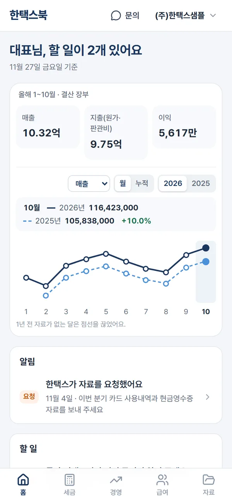
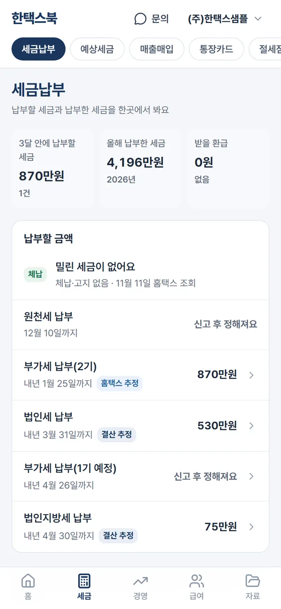
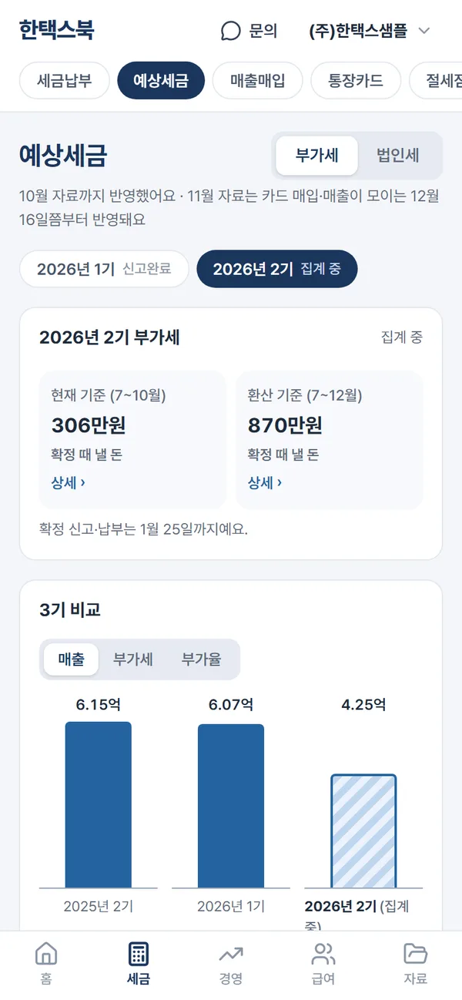
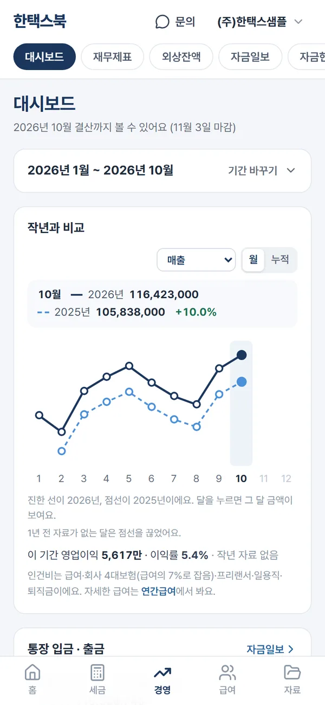
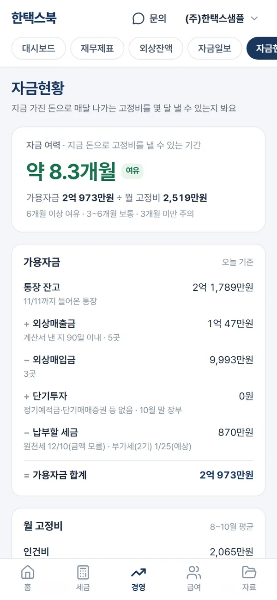
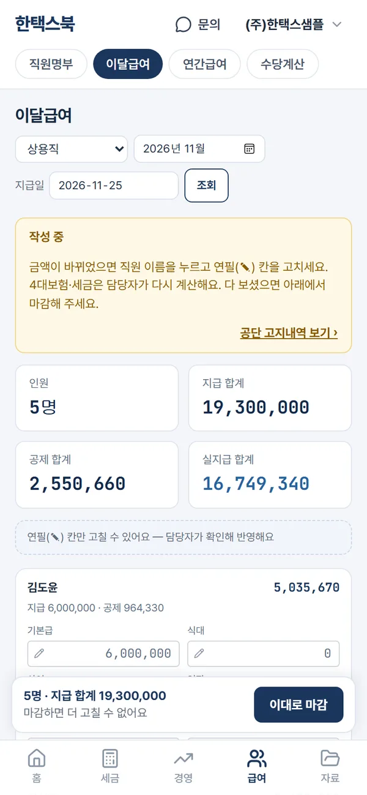
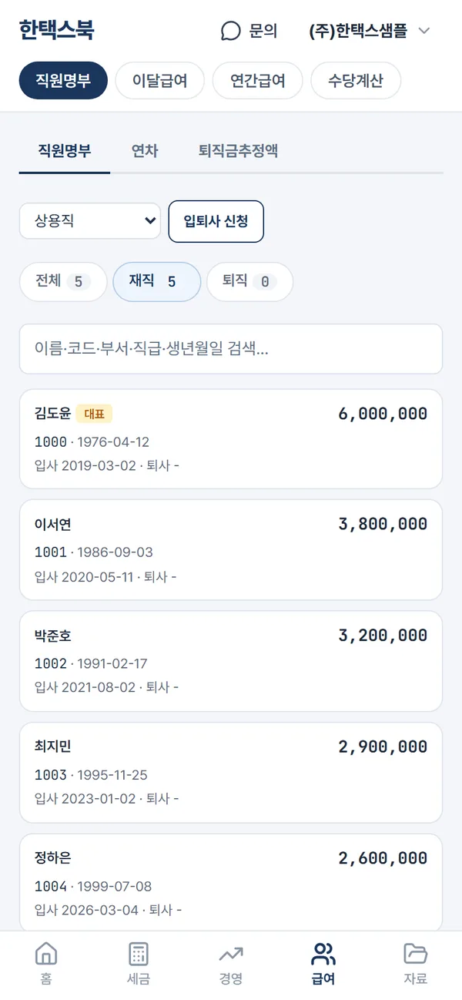
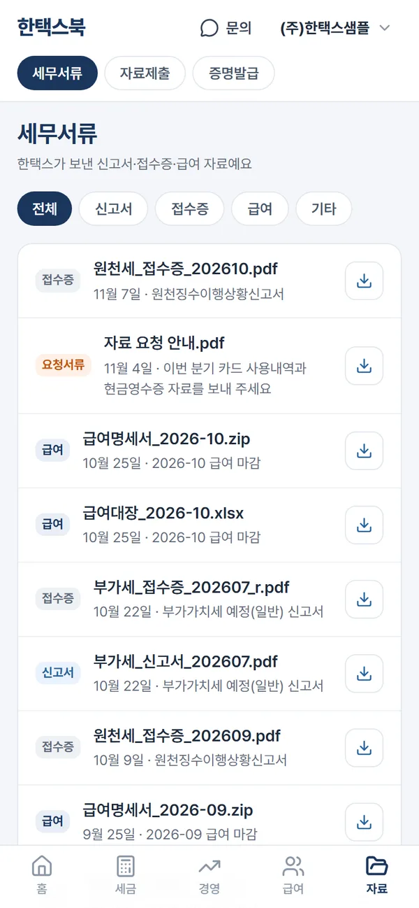
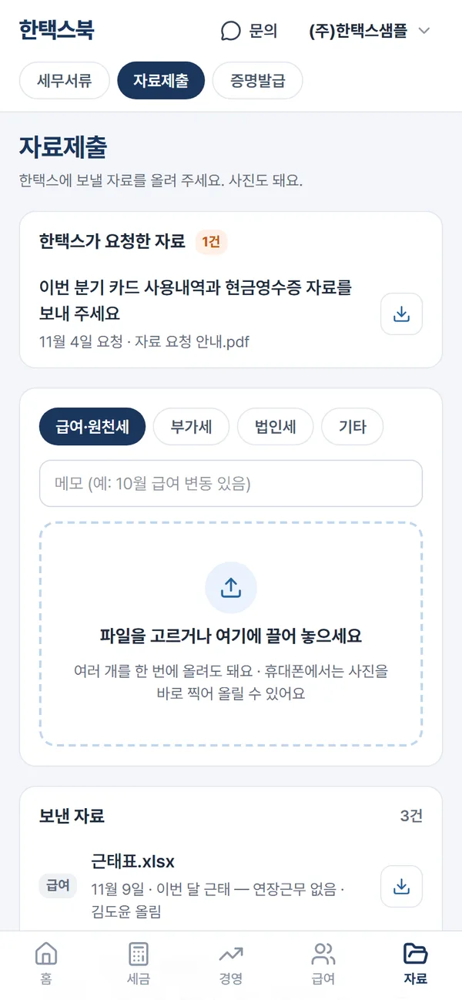

낼 세금부터 통장 흐름까지,
한 화면에서 먼저 봅니다
한택스북은 한택스와 함께하는 회사가 쓰는 전용 화면입니다. 홈택스와 장부 자료로 낼 세금을 미리 계산해 두고, 매출과 통장, 직원 급여를 정리해 보여 드립니다. 담당자가 묻는 거래에 답하고 서류를 주고받는 일도 여기서 합니다.
- 할 일담당자가 물어본 통장·카드 거래에 바로 답합니다.
- 알림한택스가 요청한 자료와 보낼 자료를 첫 화면에서 알려 드립니다.
- 요약밀린 세금, 다음에 낼 세금, 올해 매출과 이익, 통장 잔액을 모았습니다.
샘플 화면은 가상 업체로 만들어 로그인 없이 볼 수 있습니다. 앱 설치 없이 휴대폰과 PC 브라우저에서 엽니다.

낼 세금을, 신고 전에 먼저
언제 얼마를 내야 하는지, 왜 그 금액인지까지 펼쳐 볼 수 있습니다.
세금 화면은 홈택스 자료로 채워집니다.


번 돈과 남은 돈을 함께
장부상 이익과 통장에 남은 돈은 다릅니다. 두 숫자를 나란히 놓고 회사 사정을 봅니다.
대시보드는 홈택스 자료로, 나머지는 통장·카드를 연결해 매달 결산한 장부로 채워집니다.


어제 돈의 흐름을, 매일 아침 카카오톡으로
한택스북을 열지 않아도 됩니다. 전날 통장과 계산서, 카드 사용을 건수와 금액으로 정리해 매일 아침 알림톡으로 보내 드립니다.
매달 결산까지 맡기신 회사에 보내 드립니다. 받으시려면 담당자에게 말씀해 주세요.
 한택스
한택스[자금일보 안내]
(주)한택스샘플 대표님 안녕하세요 한택스입니다.
11월 11일(수) 자금 현황을 알려드립니다.
■ 계좌 입출금
· 입금 1건 / 1,980,000원
· 출금 2건 / 7,613,100원
· 계좌 잔액 217,885,359원
■ 세금계산서·계산서
· 발급(매출) 1건 / 2,200,000원
· 수취(매입) 2건 / 7,960,700원
■ 카드 사용
· 2건 / 104,200원
거래별 상세 내역은 아래 '자금일보 보기'에서 확인하실 수 있습니다.
문의사항은 담당자에게 편하게 연락 주세요.
자금일보 보기직원과 급여를 한곳에서
급여 신고를 맡기시면 직원 명부와 매달 급여가 이곳에 쌓입니다.


주고받는 서류는 여기에 모입니다
메일과 메신저로 흩어지던 신고서와 증빙을 한곳에서 찾고 보냅니다.
궁금한 점은 화면 위 「문의」에서 담당자에게 바로 연락합니다.


이렇게 시작합니다
- 담당자에게 요청
한택스에 세무를 맡기신 회사라면 담당자에게 한택스북을 쓰고 싶다고 말씀해 주세요. 사업자번호로 계정을 만들어 처음 비밀번호를 안내해 드립니다.
- 로그인
휴대폰이나 PC 브라우저에서 book.hantax47.com 에 들어가 사업자번호와 비밀번호로 로그인합니다. 처음 로그인하면 비밀번호를 새로 정합니다.
- 둘러보기
휴대폰은 아래 탭, PC는 위 탭으로 홈·세금·경영·급여·자료를 오갑니다. 매달 결산까지 맡기시면 재무제표와 자금일보 같은 화면이 더 열립니다.
자주 묻는 질문
한택스북은 누가 쓸 수 있나요?
한택스에 세무를 맡긴 회사가 쓰는 전용 화면입니다. 담당자에게 말씀하시면 사업자번호로 계정을 만들어 처음 비밀번호를 안내해 드립니다.
한택스북을 쓰려면 앱을 설치해야 하나요?
아니요. 휴대폰이나 PC의 인터넷 브라우저에서 book.hantax47.com 에 들어가 로그인하면 됩니다. 휴대폰에서는 아래 탭으로, PC에서는 위 탭으로 메뉴를 오갑니다.
한택스북의 예상 세금은 확정 금액인가요?
아닙니다. 홈택스에 모인 자료로 계산한 예상 금액입니다. 지금까지 모인 자료로 본 금액과 기간 끝까지 늘려 잡은 금액처럼 두 가지 기준으로 나눠 보여 드리고, 계산 근거도 펼쳐 볼 수 있습니다. 확정 금액은 신고 때 정해지니 미리 준비할 범위를 아는 데 쓰시면 됩니다.
재무제표와 자금일보 메뉴가 잠겨 있어요.
재무제표, 외상잔액, 자금일보, 자금현황은 통장·카드를 연결하고 매달 결산까지 맡기신 회사에 열립니다. 담당자에게 문의해 주세요.
자금일보 알림톡은 어떻게 받나요?
매달 결산까지 맡기신 회사에 전날 통장 입출금, 세금계산서·계산서, 카드 사용을 건수와 금액으로 정리해 매일 아침 카카오톡 알림톡으로 보내 드립니다. 받으시려면 담당자에게 말씀해 주세요. 알림톡의 자금일보 보기 단추를 누르면 그날 자금일보 화면이 열립니다.
한택스북 비밀번호를 잊었어요.
담당자에게 비밀번호 재설정을 요청해 주세요. 새 임시 비밀번호를 안내해 드리고, 그 비밀번호로 로그인하면 다시 새 비밀번호를 정합니다.
맡기기 전에 한택스북 화면을 볼 수 있나요?
네. 가상 업체로 만든 샘플 화면을 로그인 없이 둘러보실 수 있습니다. 숫자는 모두 예시이고, 보기만 할 수 있습니다.
숫자는 한택스북이 보여 드리고, 판단은 담당자와 함께 합니다.
우리 회사 화면이
궁금하시다면
샘플 화면을 먼저 둘러보시고, 궁금한 점은 카카오톡으로 물어보세요.